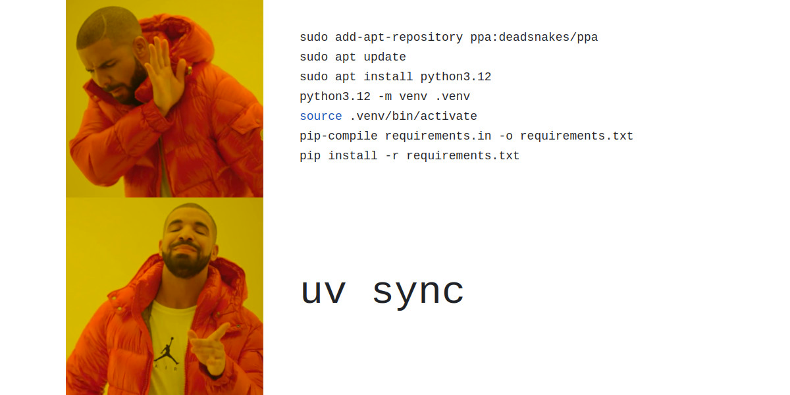

Package Management with uv
Every Python project needs a way to manage its dependencies: the external libraries your code relies on. This page introduces uv, the tool we use in this course, explains the concept of virtual environments, and briefly covers how it compares to tools you may already know.
The Problem uv Solves
When you work on multiple Python projects, they will often require different versions of the same library. Project A might need pandas 1.5, while Project B needs pandas 2.1. If you install everything globally with pip, these versions clash and eventually break each other.
The standard solution is to give each project its own isolated Python environment with its own set of packages. uv is a modern tool that handles this cleanly and very quickly. It manages your Python version, your virtual environment, and your dependencies all in one place.
uv is written in Rust, which makes it substantially faster than older tools like pip or conda for installing packages.

uv vs pip and Conda
You have likely used pip and possibly Conda (or Miniconda) before. All three tools solve the same core problem — managing dependencies — but they take different approaches.
| Feature | uv | pip | Conda |
|---|---|---|---|
| Focus | Python-only | Python-only | Multi-language |
| Speed | Extremely fast | Slow | Slower |
| Env location | .venv/ (project-local) |
anywhere | ~/miniconda3/envs/ |
| Config file | pyproject.toml |
requirements.txt |
environment.yml |
| Manages Python version | Yes | No | Yes |
| Best for | Python projects | Simple scripts | Scientific stacks |
The key practical difference from Conda is where the environment lives. With Conda, all environments are stored in a single central directory on your machine, separate from your project. With uv, the environment sits directly inside your project folder in a folder called .venv. This makes it obvious what belongs to what, and it travels with your project.
When you create a project with uv, it creates a .venv folder inside your project directory:
my-project/
.venv/ <- the virtual environment lives here
bin/
python
pip
activate
lib/
python3.12/
site-packages/ <- installed packages go here
src/
pyproject.toml
The Python executable inside .venv/bin/python is the one your project uses. Your installed packages go into .venv/lib/. Nothing touches the system Python or any other project.
Because .venv is just a folder inside your project, you always know exactly where it is. If something goes wrong, you can delete it and recreate it in seconds with uv sync.
Note
.venv should be added to your .gitignore. You never commit the environment itself to Git, only the pyproject.toml that describes it. Anyone who clones your repo can recreate the exact environment by running uv sync.
Core uv Commands
uv init
uv init creates a new project folder with the standard structure and files.
uv init my-project
cd my-project
This creates:
my-project/
.python-version <- pins the Python version
pyproject.toml <- project metadata and dependencies
README.md
src/
my_project/
__init__.py
uv also creates a .venv folder and installs the base Python version automatically. You are ready to start adding packages immediately.
If you want to initialise uv inside an existing folder instead of creating a new one:
cd existing-folder
uv init
uv add
uv add installs a package into your project and records it in pyproject.toml. Think of it as pip install, but it also keeps your config file up to date automatically.
uv add requests
uv add pandas numpy
uv add pytest --dev
The --dev flag marks a package as a development dependency: something needed for testing or tooling but not for running the project in production (e.g., pytest, ruff).
After running uv add, two things happen: the package is installed into .venv, and pyproject.toml is updated to record the new dependency. You should commit pyproject.toml to Git so others can reproduce your environment.
uv sync
uv sync reads pyproject.toml and installs all the listed dependencies into .venv. It is the command you run after cloning a project to get the environment set up — the uv equivalent of pip install -r requirements.txt.
uv sync
If .venv does not exist yet, uv creates it. If packages are already installed but out of date with pyproject.toml, uv updates them. If a package is installed but no longer listed in pyproject.toml, uv removes it.
This makes uv sync the single source of truth: what is in pyproject.toml is exactly what ends up in .venv.
uv run
Instead of activating the virtual environment manually, you can prefix any command with uv run to execute it inside the project environment:
uv run python my_script.py
uv run pytest tests/
uv run ruff check .
This works from anywhere inside the project directory without needing to activate .venv first.
The pyproject.toml File
pyproject.toml is the central configuration file for your project. It replaces the older requirements.txt and setup.py approaches and is the current standard for Python projects.
A typical file looks like this:
[project]
name = "my-project"
version = "0.1.0"
description = "A short description of the project"
requires-python = ">=3.11"
dependencies = [
"pandas>=2.0",
"requests>=2.28",
]
[build-system]
requires = ["hatchling"]
build-backend = "hatchling.build"
The dependencies list is what uv add writes to when you install a package. The requires-python field pins the minimum Python version.
You can also configure tools like Ruff directly in pyproject.toml:
[tool.ruff]
line-length = 120
This keeps all project configuration in a single file rather than scattered across .flake8, setup.cfg, and other tool-specific files.
Activating the Virtual Environment
If you need to activate the environment in your shell (e.g., for an IDE or interactive use), you can do so as you would with any standard virtual environment:
# Linux / macOS
source .venv/bin/activate
# Windows
.venv\Scripts\activate
Once activated, python and installed commands resolve to the ones inside .venv. Deactivate with:
deactivate
For running scripts and tools, prefer uv run over activating manually — it is less error-prone and works consistently across platforms.